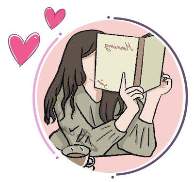

Moja prva stranica za kolegij Digitalni multimedij. Stranica sadrži nekoliko mojih radova koje sam radila za klijente i školu.
O meni

Moje ime je Natalia Zekić. Dolazim iz Žepča, Bosna i Hercegovina. Studentica sam prve godine na Grafičkom Fakultetu u Zagrebu. Završila sam srednju školu za Web Dizajn u Žepču te se time i bavim u slobodno vrijeme.
“Be the change that you wish
to see in the world.”
― Mahatma Gandhi